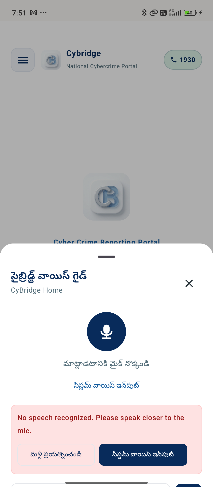

01 / BARRIER
Panic & Technical Confusion
Victims are distressed and rarely know the exact technical identifiers required by police and banks, such as 12-digit UTR/RRN numbers, beneficiary UPI VPAs, and SMS sender headers.
Cybridge is an on-device, privacy-first Android assistant that helps Indian cybercrime victims prepare verified evidence and file accurate reports on cybercrime.gov.in.

Under Ministry of Home Affairs (MHA) guidelines, defrauded funds move through mule accounts within 2 to 4 hours. Victims face three debilitating barriers during this window.
Victims are distressed and rarely know the exact technical identifiers required by police and banks, such as 12-digit UTR/RRN numbers, beneficiary UPI VPAs, and SMS sender headers.
The official portal contains multi-level nested categories. Picking the wrong subcategory delays investigation and police lien-marking on fraudster accounts.
Panicked citizens frequently delete transaction receipts, suspect WhatsApp conversations, and banking debit SMS alerts, leaving nodal officers with zero verifiable trace.
Cybridge eliminates guesswork and organizes your evidence into police-grade complaint packets in under five minutes.
Explain the incident in plain text or use the hands-free "Speak out" voice mode in your mother tongue. Cybridge guides you through 8 simple questions.
Add payment screenshots or let Cybridge read bank debit SMS alerts. On-device Google ML Kit OCR extracts UTRs, amounts, and dates without cloud uploads.
Preview a 1:1 clone of the official form. The "Live Eye" assistant pre-fills official portal fields with a visible green highlight outline.
Generate statutory Section 91 CrPC Bank Freeze notices immediately, and track critical follow-up deadlines at 24 hours, 3 days, and 7 days.
Every feature is designed specifically to help victims meet the strict statutory standards of Indian law enforcement and banking nodal officers.
Automatically selects the official category and subcategory based on the official MHA Citizen Manual, preventing mis-filing rejections.
Injects a bright green outline (#00C853) around active portal elements with an on-screen verified audit log so you see every action.
Extracts 12-digit UTR numbers, UPI VPAs, and timestamps locally using Google ML Kit. Raw images never leave your smartphone.
Automatically identifies debit alerts from official Indian banking headers (-HDFCBK, -SBINB, -ICICIB) with user consent.
Parses raw EML files on-device, evaluates SPF, DKIM, and DMARC verification, and identifies typo-squatted lookalike bank domains.
Generates formal police complaints under Section 66D IT Act, Section 318(4) BNS, and Section 91 CrPC Bank Nodal freeze notices.
Compiles facts, chronological narrative, and embedded evidence into a deterministic multi-page PDF guaranteed under 8 MB.
Scans installed applications for dangerous remote-access tools like AnyDesk, TeamViewer, or RustDesk commonly used by fraudsters.
Full text and speech support across 12 Indian languages with dynamic screen context awareness to answer citizen doubts.
Cybridge enforces an immutable architectural boundary: the AI assists with preparation, but never submits for you.
Unlike web chatbots that send your private chats and bank details to third-party cloud servers, Cybridge is built with a local-first privacy architecture.
Payment screenshots are processed directly on your smartphone processor using Google ML Kit. Raw images are never uploaded to any remote server.
Case data and verified tokens are stored in Android Room SQLite database and protected via Android Keystore AES-256 GCM encryption.
Cybridge contains zero third-party advertising trackers, no user analytics tracking, and no monetization SDKs. It is 100% free and open-source.
Cyber fraud affects citizens across all states. Cybridge breaks the English language barrier by offering complete voice and text guidance in 12 major Indian languages.
Get the latest production debug build directly on your device. Verify the cryptographic SHA-256 checksum to ensure complete package integrity.
| Package Name | com.cybervictim.assistant |
| Version | 0.1.0 |
| File Size | 55 MB |
| Minimum Android | Android 8.0+ (API 26+) |
| Release Date | November 1, 2026 |
Scan with your smartphone camera to download the APK directly.
cybridge.apk to your Downloads folder.
cybridge.apk.
Note: Only download the APK directly from this official GitHub repository page. Never download from unverified third-party file hosts.
Clear, transparent answers on how Cybridge works, data security, and official portal filing.